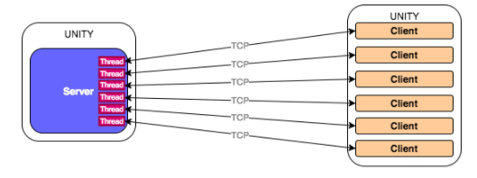
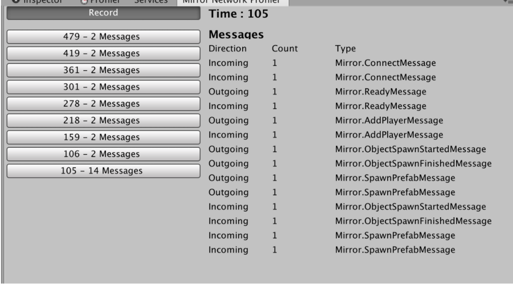

There are a lot more work to do with the online mode of the game. Since the game are played from multiple devices, it requires the synchronization between the two devices to achieve the last goal of the game.
We used Mirror Networking for our network in the game.
A brief intro about Mirror Networking, it is a high-level Networking library for Unity, compatible with different low-level transport. There are many useful methods to help implementing networking for Unity game. It does help to cut out many processes in making an online game in Unity. In this Part, we will divide it into 3 part which are Online mode Implementation, Networking with Mirror.
Online mode Implementation
This part is different from Offline and Multiplayer, since it is based on the Mirror networking, we cannot add the prefabricated as easy as in the offline and multiplayer mode.
In this mode, we cannot drag and drop the prefabricated of the character anymore. Instead, we will have a Network manager object, which responsible for managing and creating server, as well as spawning the player prefabricated.
There are 3 components in this networking object, NetworkManager, Kcp Transport and, NetworManagerHUD. These 3 components bring let the network manager object to manage the game.
In this case, we add one more script component into this network object. Which allows to spawns distinctive character prefabricated. All the scripts from the prefabricated also need to be changing to be compatible with the network. In detail, all the script that will have to change to networkbehaviour to be compatible with the network.
Networking with Mirror
Mirror Networking use the TCP network protocol. With Mirror, the Server & Client are ONE project (hence the name). Instead of having one code base for the server and one for the client, we simply use the same code for both.
All network message can we show within Unity, as in the picture below.
